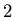
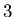
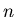

Consider the Cantor set as pictured in Gleick, p. 93. This set is
constructed as follows. Initially, at
step , start with a line segment of length . At each successive
step, remove the middle third of each line segment in the previous
step.
Complete the following table.
| Step | Number of Pieces | Length of Each Piece | Total Length in Set |
|  | |||
|  | |||
|  |